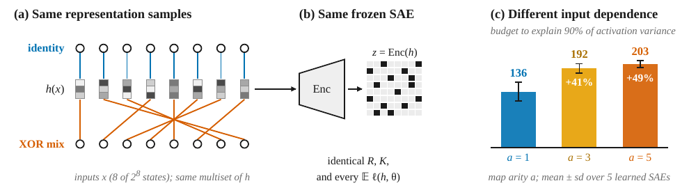
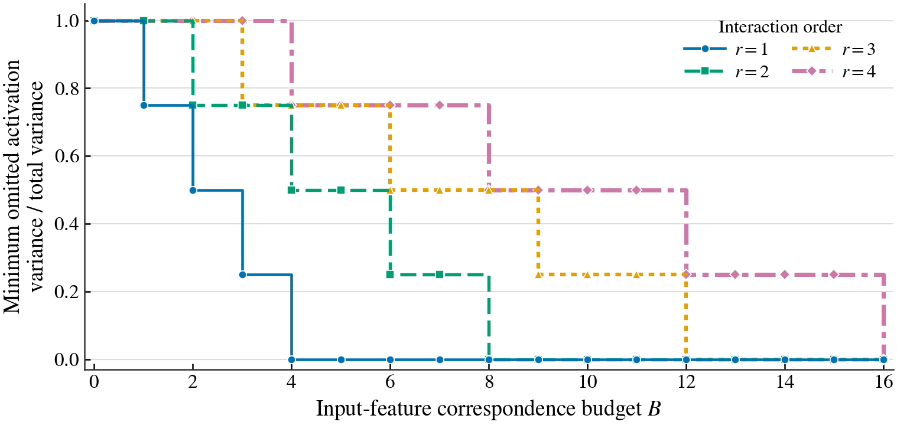
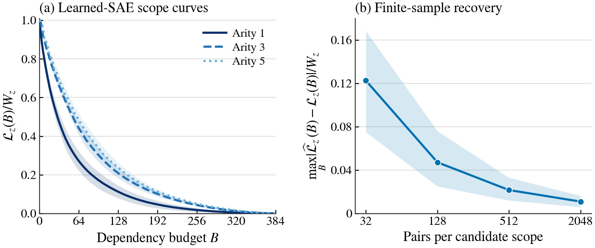
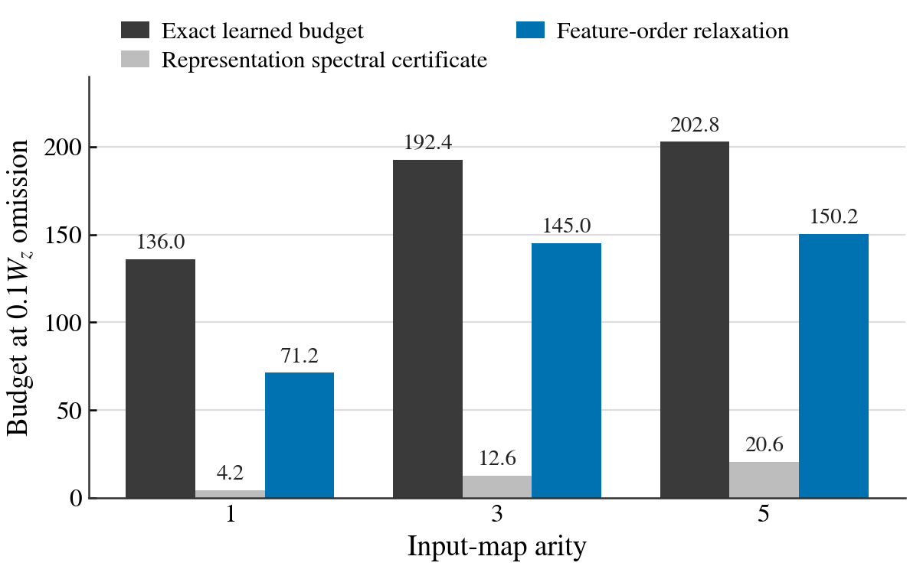

Can the same SAE have different input dependencies?
Yes. A representation-only objective sees the same distribution of hidden states regardless of how those states were paired with the inputs. Permuting that pairing can preserve every hidden-state and activation sample while changing the controlled input factors a feature depends on.

Keep the SAE fixed, change only which inputs are allowed to explain each feature.
Feature scope
Aⱼ is a set of controlled input variables. It is the set used to predict activation zⱼ.
Cost
Count each input-feature dependency separately. B(A)=Σⱼ |Aⱼ|.
Residual
Γ measures activation variance left after using only the selected inputs for each feature.
The first curve asks how much unexplained feature variance remains under a fixed budget. The inverse asks how many total input-feature incidences are needed to reach a required fidelity. Reconstruction error and SAE sparsity cannot answer this question because they do not specify the input-to-sample correspondence.

Five trained SAEs. Same codes, higher scope budgets.
Each seed trains a small representation model and a 24-to-48 overcomplete SAE on 192 of 256 Boolean states. The encoders and decoders are then frozen and evaluated with three bijective input maps on the full grid.
Identity map, mean budget at 90% explained activation variance
XOR arity 3, an increase of 41.5%
XOR arity 5, an increase of 49.1%

How strong are the lower bounds?
The representation-level spectral bound is coarse; the feature-order bound is tighter because it uses the learned activation structure.

Run the scope-curve demo.
Install the package
Only NumPy is required for the full-grid core analysis and built-in offline demo.
Recompute all five-seed curves
The demo computes and plots each optimal scope curve from the released activation arrays.
Use your own controlled data
Provide complete frozen SAE codes in Boolean input bitmask row order and a declared number of factors.
python -m pip install -e . python demo/demo.py python experiments/exact_construction/verify_family.py python -m pytest -q # A complete Boolean factorial activation table: python demo/custom_activations.py my_codes.npy --n-factors 8
Continue with the Python API and reproduction guide.